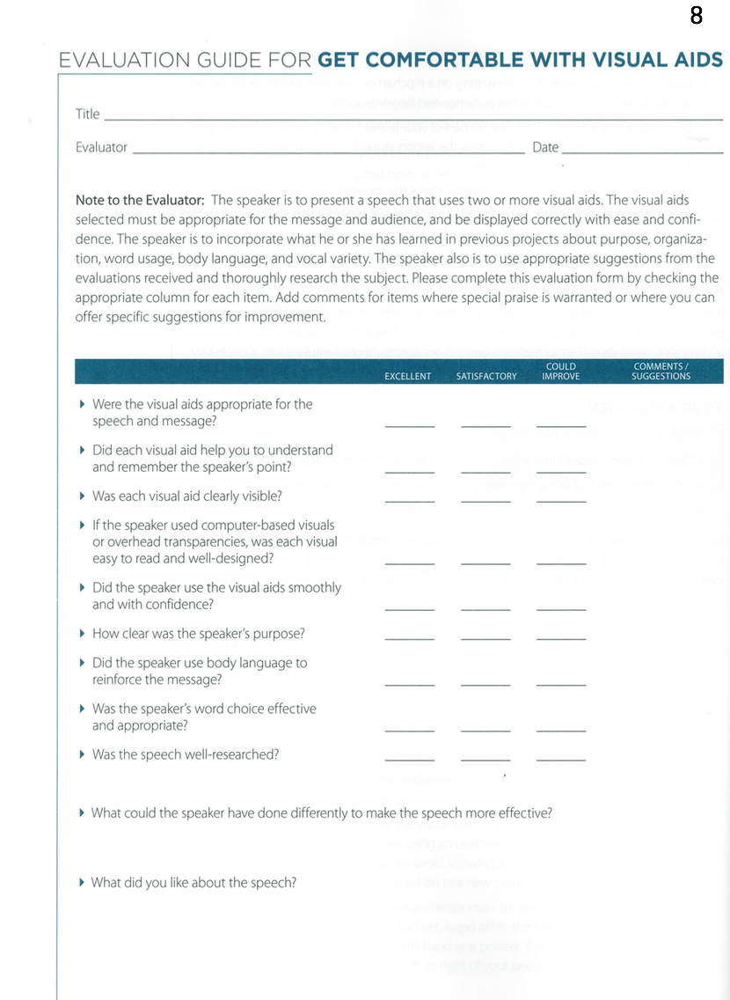

<!-- Main -->
	<div id="main" class="wrapper style1">
		<div class="container">
			<section>
				<div class="10u -1u">
					<header class="major">
						<!-- <h2>Blog</h2> -->
						<!-- <span class="byline">Integer sit amet pede vel arcu aliquet pretium</span> -->
					</header>
					<h2>What is this speech about ?</h2>
					<ul>
						<li>Visual aids help an audience understand and remember what they hear; they are a valuable tool for speakers.</li>
						 <li>The most popular visual aids are computer- based visuals, overhead transparencies, flip charts, whiteboards and props.</li>
						<li>The type of visual aid you choose depends on several factors, including the information you wish to display and the size of the audience.</li>
						<li>Visuals must be appropriate for your message and the audience, and be displayed correctly with ease and confidence.</li>
</ul><br>
<h2>Objectives</h2>
<ul>


<li>Select visual aids that are appropriate for your message and the audience. </li>
	 <li>Use visual aids correctly with ease and confidence.</li>
	 <li>Time: Five to seven minutes.</li>
</ul><br>
<h2>Evaluation</h2>
Download: <a href="Evaluation8.pdf"></a>
	<br>

	<h2>More Resources:</h2>

<li><a href="Your_body_speaks.pdf">Resource from Toastmasters Website</a></li>
		<li><a href="http://sixminutes.dlugan.com/speak-up-voice-projection/">Voice Projection</a></li>
		<li>  <a href="http://sixminutes.dlugan.com/rule-of-thirds-powerpoint/">Improve your Powerpoint Slides</a></li>
		<li><a href="http://sixminutes.dlugan.com/six-simple-techniques-for-presenting-data-hans-rosling-ted-2006/">How to Present Data</a></li>
		<li><a href="http://sixminutes.dlugan.com/sequence-presentation/">How to Sequence your Presentation</a></li>


				</div>
			</section>
		</div>
	</div>
